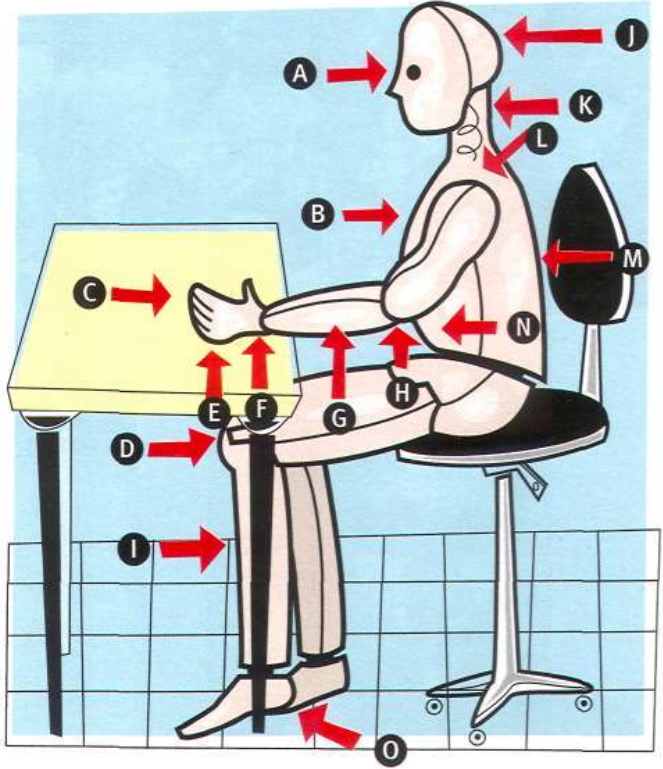
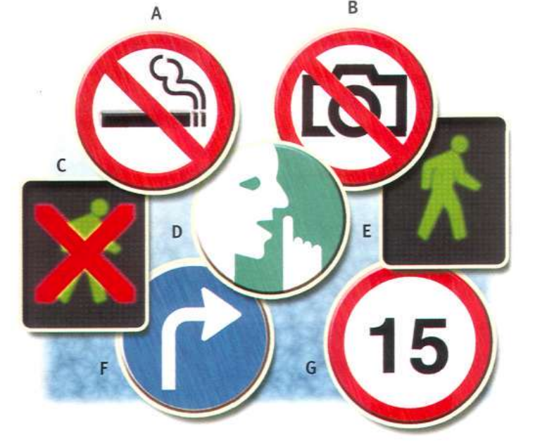

Body moving
Today we will
- talk about health
- give orders
Vocabulary: body
Match new words with body parts
Listen and read the text
HEALTH: ARE YOU SITTING COMFORTABLY?
- Are you sitting comfortably?
- Do you spend a lot of your day sitting down?
- Do you work in an office?
- Do you work in front of a computer?
- Do you play computer games?
- Are you in a classroom for many hours a day?
- Do you travel on long plane journeys frequently?
- Do you spend a long time in a car, or on a bus every day?
If you answered 'yes' to more than two of these questions, then read on ...
It is not normal for the human body to sit for a long time. Sitting for a long time is new in human history. Now, sitting for many hours every day is common. It is also dangerous for your health.
You can hurt your back, your arms, your neck and your wrists if you sit for a long time every day. People who work in offices often have health problems because they sit too long in front of a computer. People who travel many hours on planes often say they feel bad at the end of a long trip. Experts say you should do the following if you don't want any problems:
(A) Keep your back straight and your feet on the floor. You should have a good. comfortable chair.
(B) Don't sit for more than thirty minutes. Stand up and walk around. Several studies showed that people who take frequent 'microbreaks' do more work in the day.
(C) Water cleans your body and keeps you healthy. Its good for you and gives you energy. Don't drink lots of coffee or tea.
(D) Stretching is a simple and quick way of doing some exercise while you are sitting down. Stretch your arms, your hands and your shoulders. Don't stretch a lot if it hurts.
Read the rest of the article again and put the phrases below in the right place.
- Take breaks often
- Drink water
- Move your body
- Sit correctly
Which of the things do you do when you are sitting for a long time?
Grammar: Imperatives
We use the imperative to give orders.
The imperative form of the verb is the same as the infinitive.
Drink water. Sit straight.
We use don't + verb to make negative imperatives.
Don't sit for a long time. Don't move.
Make a sentence for each picture. Use the verbs and phrases in the box in the imperative.
take photos / smoke / speak / walk / turn right / drive slowly
Now I can
- Can you name body parts?
- Can you give orders?
- Photo by Clem Onojeghuo on Unsplash
- Photo by Brett Jordan on Unsplash